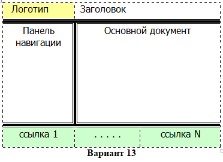

Lab #1
Поясняющий текст про сайт
Создание макета для организации и публикации лабораторных работ.
Сверстайте главную страницу своего сайта по вариантам (табл. 1).
Технические требования к сайту:
1) логотип – картинка (например, логотип кафедры);
2) заголовок – название дисциплины;
3) панель навигации – для ссылок на внутренние страницы сайта –
номера лабораторных работ;
4) ссылочная панель – гиперссылки на сайт университета, уч.портал и т.д. В качестве гиперссылки используется картинка и текстовая подпись. Гиперссылки открываются в новом окне;
5) основной документ – вступительное слово, поясняющее текст про сайт, тему и задание лаб.работы.
6) footer – «подвал» сайта или раздела – Ф.И.О. разработчика, дата документа.
